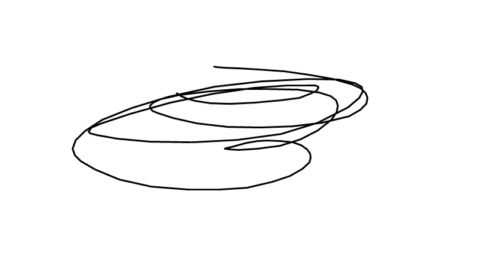

ONLY TEST

Ubuntu命令归纳
近段时间在做CONTIKI系统应用开发，需要用到Ubuntu，所以把Ubuntu需要用到的命令记录下来，以便以后查询使用。
- 解压命令
unzip \
tar -zxf \
Source Insight显示中文
source insight 中文注释为乱码解决
source insight 阅读VC++源码，注释为乱码解决方案
- options->preferences->Syntax Formatting->Styles；
- 在Style Name 选择 Comment，再对其Font Name 选择Pick，然后再选择“新宋体”，编码选择GB2312。
GIT for Linux安装
因为最近在做CONTIKI系统应用的开发，要用到GIT。在Ubuntu上安装GIT时遇到一个问题，编译的时候报错
Writing perl.mak for Git
make[2]: *** [perl.mak] Error 1
make[1]: *** [instlibdir] Error 2
make: *** [git-add--interactive] Error 2
一开始以为是缺少环境，几次检查后确定没有问题。最后发现是系统时间设置错误，系统的时间早于版本的时间，在时间正确设置后，问题解决。
SSD1306的SPI协议
近段时间调试小尺寸的OLED显示屏，虽然是SPI协议，接口上却写着SCL和SDA。所以要注意的是这种集成模块的OLED并不是使用IIC协议，而是SPI协议，而且并不用管CS，接低电平即可。
SSD1306的SPI协议时序图，因为这个OLED默认就把CS拉低了，所以每次传输可以不用去管CS，但没CS这几个IO就被独占了。从图上可以看到数据是在SCLK上升沿时被传入，高位在前。DC用于表示写入的是数据还是指令，DC为低时是指令写入，DC为高时是数据写入。
128*64的OLED在SSD1306的控制下，被分成8个页，每个页有8行128列，每个列对应一个字节。
OLED(SSD1306驱动芯片)的IIC协议
下面是OLED(SSD1306驱动芯片)IIC协议的摘要中文翻译
- SCL和SDA都要接上拉电阻
- 数据传输中SDA只能在SCL为低时转变，在SCL为高时必须保持不变
- RES接口用于设备初始化
- DC接口作为从设备选择位，当R/W为1时是读取模式，R/W为0时是写入模式。
 - ACK信号在一个SCL的高电平时输出，0为成功，1为失败
- IIC写入的顺序
(1)开始信号
(2)从设备地址
(3)写入控制字节和数据字节。控制字节为CO+D/C+6个0。
如果CO为0，表示没有连续写入。
如果D/C为0，表示写入命令；D/C为1，表示写入数据，数据将储存在GDDRAM中，GDDRAM中的数据指针会自动加1
(4)每一次写入都会有ACK
(5)IIC开始信号为SDA由高到底，结束信号为由低到高，SCL都要为高
12864LCD显示屏的串口协议
12864LCD显示屏可以选择使用串口还是并口模式

如上图所示,PSB接地时12864采用串口模式。
所以当使用串口模式时，硬件的连接为：
GND,PSB,LED_K接地；VCC,VO,RS(CS),/RST,LED_A接+5V；
R/W(SID)接SPI数据口；E(CLK)接SPI时钟口。
12864LCD显示屏的数据分三个字节传输

(1)控制字节，控制数据传输方向和数据类型
(2)8位数据的高4位
(3)8位数据的低4位
CONTIKI应用之网络功能应用
学校挑战杯项目是关于物联网的，需要用到CONTIKI系统的网络功能。在开发过程中遇到不少问题，所以把问题记录下来，以便以后总结。
- 用contiki-wsn2530dk例程里的第9个“RPL-Collect”时“Sink”节点不调用collect_common_set_send_active()函数就不能接受节点的数据。
因为在Contiki2.7中send_active变量初始化为0，需要调用collect_common_set_send_active()给send_active变量赋值为1。而Contiki3.0中send_active变量初始化为1，并不需要再赋值。 uip_ipaddr_copy(&server_conn->ripaddr, &clientipaddr); uip_udp_packet_send(server_conn, "GET", sizeof("GET")); uip_create_unspecified(&server_conn->ripaddr);
主机给节点发送数据需要用到上面的函数，而用
` uip_udp_packet_sendto(server_conn, buf, strlen(buf),
这个函数却不能把数据发送的节点，原因暂时不明。&clientipaddr, UIP_HTONS(UDP_CLIENT_PORT));`
CONTIKI应用之传感器驱动编写
在用CONTIKI系统做开发时，免不了编写各种传感器的驱动。现把开发时遇到的问题和得出的经验记录下来，以便以后总结。
CONTIKI系统的传感器驱动都封装在sensor这个结构体内
struct sensors_sensor {
char * type; //传感器名称
int (* value) (int type); //指向读取传感器数据函数的指针
int (* configure) (int type, int value); //指向传感器配置函数的指针
int (* status) (int type); //指向读取传感器状态函数的指针
};
在编写完传感器的驱动程序后，必须通过宏定义声明各个函数
SENSORS_SENSOR(button_1_sensor, BUTTON_SENSOR, value_b1, configure_b1, status_b1);
并且在”smartrf-sensors.c”的结构体中
const struct sensors_sensor *sensors[] = {
#if ADC_SENSOR_ON
&adc_sensor,
#endif
#if BUTTON_SENSOR_ON
&button_1_sensor,
#if MODELS_CONF_CC2531_USB_STICK
&button_2_sensor,
#endif
#endif
0
};
添加你所编写的驱动的名称。
系统会在”sensors.c”中，搜索*sensors[]数组中的值
for(i = 0; sensors[i] != NULL; ++i) {
sensors_flags[i] = 0;
sensors[i]->configure(SENSORS_HW_INIT, 0);
}
用”sensors_changed”函数标记传感器事件的发生，并传递给用户程序。
用”sensors_find”函数查找传感器驱动
sensor =(struct sensors_sensor *) sensors_find(ADC_SENSOR);